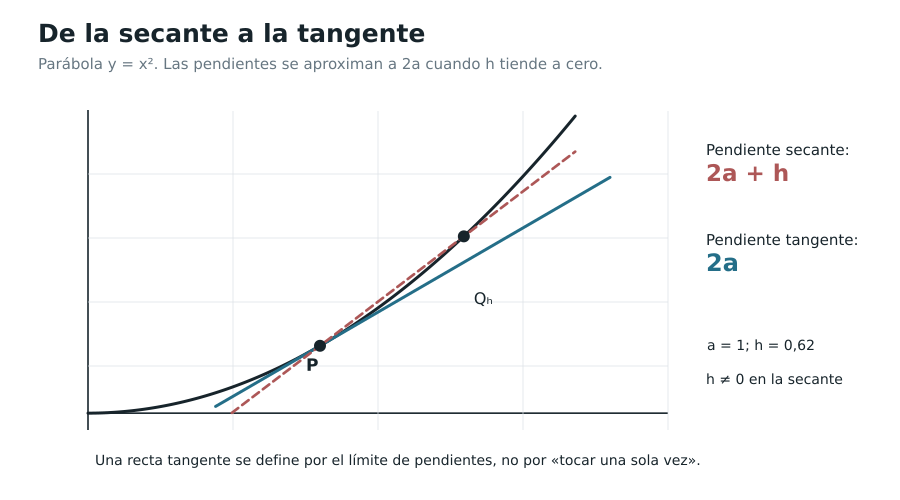

Capítulo 1. Tangentes, velocidades y variación
Índice del libro · Prefacio · Itinerarios
Exposición · Ejercicios · Soluciones
Pregunta generadora. ¿Cómo asignar a una curva una inclinación en un punto y a un móvil una velocidad en un instante, sin dividir por un incremento que ya se ha hecho cero?
Si conocemos una posición en dos instantes, el desplazamiento y el tiempo transcurrido permiten calcular una velocidad media. Podemos acortar el intervalo para estudiar el movimiento más de cerca, pero la velocidad en un instante exige decidir qué información conservan esas medias cuando sus extremos se aproximan al mismo tiempo. En una curva, los valores \(f(a)\) y \(f(a+h)\) permiten calcular del mismo modo la inclinación de una secante; al acercar sus puntos tendremos que averiguar si las pendientes llegan a determinar una inclinación local.
Los límites de C00 ofrecen el lenguaje para responder: mantenemos \(h\ne0\) en cada cociente y examinamos su comportamiento cuando \(h\to0\), en lugar de efectuar una división con \(h=0\). Si las pendientes se acercan a un mismo número finito, ese número será la derivada. Lo que puede parecer al principio una forma de prolongar un cálculo tendrá una consecuencia geométrica más precisa: permitirá elegir una recta cuya aproximación a la curva mejore en proporción al desplazamiento desde el punto.
1.1. Una secante que se aproxima, pero no se anula
Volvamos a \(f(x)=x^2\), el primer problema de C00, §0.1. Fijemos \(a\in\mathbb R\). La recta por \(P=(a,a^2)\) y \(Q_h=(a+h,(a+h)^2)\), para \(h\ne0\), tiene pendiente
\[ \frac{(a+h)^2-a^2}{(a+h)-a}=2a+h. \]
La pendiente \(2a+h\) permite seguir el acercamiento: mientras \(h\ne0\), tenemos una secante por dos puntos distintos, y al reducir el incremento sus pendientes se aproximan a \(2a\). El numerador y el denominador originales tienden ambos a cero, aunque su cociente converge a un valor finito. La simplificación realizada para incrementos no nulos explica esa convergencia sin asignar significado a \(0/0\).
La ecuación de esas secantes, escrita tomando siempre como punto de paso \(P\), es
\[ y=a^2+(2a+h)(x-a). \]
Cuando sus pendientes convergen a \(2a\), la recta candidata es
\[ y=a^2+2a(x-a). \]
Esta elección de pendiente responde al comportamiento de las secantes, pero aún podemos pedir una justificación geométrica: cuánto se separa la curva de la recta cuando nos alejamos un poco del punto. En §1.6 comprobaremos que la separación resulta pequeña incluso en comparación con el desplazamiento horizontal, propiedad que precisará el sentido de aproximar la gráfica hasta el primer orden. También habrá funciones para las que ninguna pendiente real consiga esa aproximación.

1.2. De la geometría al movimiento: dos problemas distintos
La tangente a una circunferencia suele ser nuestra primera imagen de tangencia: la recta toca la figura en un punto y la deja entera de un mismo lado. En una gráfica pueden separarse esas propiedades. La recta \(y=0\), por ejemplo, atraviesa la curva \(y=x^3\) en el origen y será allí su tangente diferencial, porque la aproximación que ofrece cerca del origen tiene el error requerido. Contar las intersecciones con toda la curva responde a una pregunta global, mientras que la inclinación buscada se decide por lo que sucede en las proximidades del punto.
Por otra parte, una posición \(s(t)\) se mide en unidades de longitud y el tiempo \(t\) en unidades temporales. Para \(t\) y \(t+h\) del dominio físico, la razón
\[ \frac{s(t+h)-s(t)}{h},\qquad h\ne0, \]
mide desplazamiento dividido por tiempo transcurrido. Esa velocidad media tiene signo, pues la diferencia de posiciones puede ser positiva o negativa según el sentido del movimiento. La rapidez media requiere otra información, la distancia total recorrida: si un móvil avanza y regresa al punto de partida, su desplazamiento neto es cero, aunque haya recorrido una distancia positiva.
Consideremos el modelo algebraico \(s(t)=s_0+v_0t+ct^2\), con \(t\ge0\). Para \(h\ne0\) permitido por el dominio,
\[ \frac{s(t+h)-s(t)}h=v_0+2ct+ch. \]
Por tanto, las velocidades medias se aproximan a \(v_0+2ct\) cuando \(h\to0\). Si \(c\) tiene dimensiones de longitud/tiempo\(^2\), la expresión resultante tiene dimensiones de longitud/tiempo, como corresponde. El límite describe el cambio previsto por la función elegida. Su interpretación física conserva las unidades del cociente y requiere que el modelo represente adecuadamente el movimiento que estudiamos.
Nota histórica H1. La relación entre distancia y cuadrado del tiempo aparece en el estudio galileano de la caída uniformemente acelerada. La función anterior permite explorar esa dependencia con nuestro lenguaje de límites.
1.3. La razón de cambio media
Definición 1.1 (EDC-C01-DEF-001). Sea \(f:D\to\mathbb R\), donde \(D\subseteq\mathbb R\), y sean \(a,b\in D\) con \(a\ne b\). La razón de cambio media de \(f\) entre \(a\) y \(b\) es
\[ M_f(a,b)=\frac{f(b)-f(a)}{b-a}. \]
Para \(b=a+h\) escribiremos \(Q_f(a,h)=M_f(a,a+h)\), de modo que
\[ Q_f(a,h)=\frac{f(a+h)-f(a)}h, \qquad h\ne0,\quad a,a+h\in D. \]
Las dos variables de \(M_f\) representan puntos del dominio, mientras que en \(Q_f\) conservamos el punto inicial y expresamos el segundo mediante un incremento. Esa escritura permite variar la separación sin cambiar el lugar alrededor del cual investigamos. Si \(f\) representa una posición, \(Q_f\) es una velocidad media con signo; si \(f\) representa temperatura en función del tiempo, sus unidades serán grados por unidad temporal. Si \(f\) representa una magnitud sin unidad, la razón puede llevar las unidades inversas de la variable.
Una razón de cambio puede ser positiva, negativa o cero. Al estudiar una tasa instantánea tendremos que controlar todas las secantes admisibles suficientemente próximas: una secante particular, o incluso una sucesión bien elegida, puede sugerir una pendiente que otras aproximaciones desmientan. La condición de límite recoge esa exigencia.
1.4. La derivada en un punto interior
Definición 1.2 (EDC-C01-DEF-002). Sea \(D\subseteq\mathbb R\), \(f:D\to\mathbb R\) y \(a\in D\) un punto interior de \(D\): existe \(r>0\) tal que \((a-r,a+r)\subseteq D\). Decimos que \(f\) es derivable en \(a\) si existe un número real \(L\) que satisface
\[ \lim_{h\to0}\frac{f(a+h)-f(a)}h=L. \]
Escribimos \(f'(a)=L\), y llamamos a ese número derivada de \(f\) en \(a\). La función \(f\) será derivable en un intervalo abierto \(I\) si lo es en cada \(a\in I\).
La definición exige un límite finito, bilateral y único. Su traducción \(\varepsilon\)–\(\delta\), usando la definición de límite de C00, es la siguiente:
\[ \begin{gathered} \exists L\in\mathbb R\ \forall\varepsilon>0\ \exists\delta>0\ \forall h\in\mathbb R:\\ 0<|h|<\delta \quad\Longrightarrow\quad \left|\frac{f(a+h)-f(a)}h-L\right|<\varepsilon, \end{gathered} \]
con \(\delta\le r\) si es necesario, para que todos los argumentos permanezcan en el dominio. Primero tiene que haber un único candidato \(L\), y después, para cada tolerancia \(\varepsilon\), debemos encontrar una distancia \(\delta\) que mantenga próximos a él todos los cocientes admitidos. La distancia puede cambiar cuando pedimos mayor precisión; la pendiente candidata permanece fija. La unicidad de límites probada en C00 asegura además que dos candidatos distintos no pueden satisfacer esa condición.
Teorema 1.1 (unicidad de la derivada; EDC-C01-THM-001). Si \(f\) es derivable en el punto interior \(a\), su derivada \(f'(a)\) está determinada de manera única.
Demostración. Si \(L\) y \(M\) satisfacen la definición, ambos son límites finitos de la misma función \(h\mapsto Q_f(a,h)\) en \(h=0\), que es un punto de acumulación de su dominio perforado. La unicidad del límite funcional de C00 obliga a \(L=M\). \(\square\)
El símbolo \(f'(a)\) representa un número obtenido al fijar el punto \(a\). Si repetimos la investigación en distintos puntos y los límites existen, esos números pueden reunirse en una función derivada \(f'\). Su dominio depende de dónde hayamos conseguido demostrar la existencia del límite, de modo que una función puede ser derivable sólo en una parte del suyo.
1.5. Primeras derivadas obtenidas sin reglas memorizadas
1.5.1. Una parábola y una cúbica
Proposición 1.1 (EDC-C01-PRP-001). Para \(f(x)=x^2\) sobre \(\mathbb R\) se cumple \(f'(a)=2a\); para \(g(x)=x^3\) se cumple \(g'(a)=3a^2\), para cada \(a\in\mathbb R\).
Demostración. Para \(f\) ya conocemos \(Q_f(a,h)=2a+h\to2a\). Para \(g\), el binomio finito proporciona
\[ \frac{(a+h)^3-a^3}h=3a^2+3ah+h^2, \qquad h\ne0. \]
El límite es \(3a^2\). En ambos casos el cálculo se hizo únicamente para \(h\ne0\) y el paso al límite utiliza operaciones sobre funciones polinómicas, justificadas en C00. \(\square\)
En el origen, la cúbica tiene derivada cero y su tangente es horizontal, aunque la curva pasa de valores negativos a positivos y cruza la recta. La pendiente límite describe la aproximación local sin exigir que la gráfica permanezca de un solo lado.
1.5.2. Una función racional
Proposición 1.2 (EDC-C01-PRP-002). Si \(f(x)=1/x\) con dominio \(D=\mathbb R\setminus\{0\}\), entonces \(f'(a)=-1/a^2\) para cada \(a\ne0\).
Demostración. Antes de restar las fracciones tenemos que mantener tanto \(a\) como \(a+h\) distintos de cero. Sabemos que \(a\ne0\) y elegimos \(|h|<|a|/2\); entonces \(|a+h|\ge|a|-|h|>|a|/2\), de modo que \(a+h\ne0\) y la segunda división también es lícita. Para \(h\ne0\),
\[ \frac{\dfrac1{a+h}-\dfrac1a}{h} =-\frac{1}{a(a+h)}\longrightarrow-\frac1{a^2}. \]
Al llevar las fracciones al mismo denominador, el numerador es \(a-(a+h)=-h\), y la cancelación del incremento deja la expresión indicada. Como \(a+h\to a\) y \(a^2\ne0\), la continuidad de los cocientes racionales demostrada en C00 permite tomar el límite. \(\square\)
1.5.3. La función valor absoluto
La función \(f(x)=|x|\) es continua en todo \(\mathbb R\), pero en el origen
\[ Q_f(0,h)=\frac{|h|}{h} =\begin{cases}1,&h>0,\\-1,&h<0.\end{cases} \]
No existe límite bilateral. Se trata de un obstáculo conceptual: una gráfica puede ser continua y, sin embargo, no admitir una pendiente local única. En §1.8 precisaremos los límites por cada lado.
1.6. Lo que significa aproximar por una recta
Una pendiente límite elige una recta, pero también podemos examinar qué gana esa recta frente a cualquier otra que pase por el mismo punto. Supongamos que la pendiente elegida provisionalmente es \(m\). La recta por \((a,f(a))\) queda representada por la función afín
\[ \ell_{a,m}(x)=f(a)+m(x-a). \]
Si \(f\) es continua en \(a\), el error \(f(a+h)-\ell_{a,m}(a+h)\) tiende a cero con cualquier pendiente \(m\): la curva se acerca a \(f(a)\) y la recta también. Esa condición por sí sola no distingue una buena aproximación. En la parábola podemos medir la diferencia con mayor precisión: el error es \((2a-m)h+h^2\), y su magnitud dividida por \(|h|\) es \(|2a-m+h|\). Sólo la elección \(m=2a\) hace que este último error relativo tienda a cero; cualquier otra pendiente conserva una separación proporcional al desplazamiento. Pediremos por eso que el error sea pequeño en comparación con \(|h|\), condición que el siguiente teorema relaciona con la derivada.
Teorema 1.2 (caracterización por aproximación lineal; EDC-C01-THM-002). Sean \(D\subseteq\mathbb R\), \(a\) interior de \(D\) y \(f:D\to\mathbb R\). Las siguientes afirmaciones son equivalentes:
- \(f\) es derivable en \(a\).
- Existe \(m\in\mathbb R\) y una función \(\eta\) definida para incrementos \(h\) suficientemente pequeños, con \(\eta(0)=0\) y \(\eta(h)\to0\) cuando \(h\to0\), tales que
\[ f(a+h)=f(a)+mh+h\eta(h). \]
En tal caso \(m=f'(a)\), y este número es único.
Demostración. Supongamos que existe \(f'(a)=m\). Queremos separar el incremento de la función en la parte \(mh\) que aporta la recta y un error menor en proporción a \(h\). El cociente incremental ya describe el cambio por unidad de incremento; si le restamos su límite \(m\), obtenemos una cantidad que tiende a cero. Para \(h\ne0\) suficientemente pequeño definimos
\[ \eta(h)=\frac{f(a+h)-f(a)}h-m \]
y ponemos \(\eta(0)=0\). Por definición de derivada, \(\eta(h)\to0\). Al multiplicar por \(h\) y despejar el valor de la función obtenemos la identidad del enunciado: el término \(h\eta(h)\) recoge el error del modelo lineal. Para \(h=0\) la identidad también vale, pues ambos términos que contienen el incremento se anulan.
Recíprocamente, supongamos que tenemos esa identidad con \(\eta(h)\to0\). Para recuperar la tasa de cambio restamos \(f(a)\) y dividimos por el incremento no nulo:
\[ \frac{f(a+h)-f(a)}h=m+\eta(h)\longrightarrow m. \]
Los cocientes convergen por tanto al número real \(m\), que es \(f'(a)\) por definición y es único por el Teorema 1.1. \(\square\)
También podemos expresar la condición mediante el resto \(R_a(h)=f(a+h)-f(a)-f'(a)h\):
\[ \lim_{h\to0}\frac{R_a(h)}{|h|}=0. \]
En efecto, \(R_a(h)=h\eta(h)\) y \(|R_a(h)|/|h|=|\eta(h)|\to0\). El error puede ser distinto de cero para cada incremento y, aun así, hacerse tan pequeño en proporción a su magnitud como pidamos al aproximarnos al punto. Escribiremos \(R_a(h)=o(|h|)\) para abreviar esa condición. La notación describe el comportamiento del resto; la división sigue realizándose únicamente para \(h\ne0\).
Definición 1.3 (recta tangente diferencial; EDC-C01-DEF-003). Si \(f\) es derivable en el punto interior \(a\), la recta tangente a la gráfica de \(f\) en \((a,f(a))\) es
\[ y=f(a)+f'(a)(x-a). \]
Es la única recta que pasa por el punto y cuyo error respecto de la función es \(o(|x-a|)\) cuando \(x\to a\). Esa unicidad es una consecuencia del Teorema 1.2, no una convención basada en contar intersecciones. Esta definición no pretende clasificar tangentes verticales: una pendiente vertical no es un número real finito y exige otro lenguaje geométrico.
Ejemplo 1.1. Para \(f(x)=x^2\) la recta tangente en \(a\) es \(y=a^2+2a(x-a)\). La diferencia exacta es
\[ f(a+h)-[a^2+2ah]=h^2, \qquad \frac{|h^2|}{|h|}=|h|\longrightarrow0. \]
La recta candidata de §1.1 queda así justificada. En la cúbica, la tangente en el origen es \(y=0\) y el error es \(h^3=o(|h|)\), aunque la gráfica la atraviese.
1.7. Derivabilidad y continuidad: una implicación, no una equivalencia
Teorema 1.3 (EDC-C01-THM-003). Si \(f:D\to\mathbb R\) es derivable en un punto interior \(a\) de \(D\), entonces \(f\) es continua en \(a\).
Demostración. La aproximación lineal del Teorema 1.2 expresa la diferencia de valores como
\[ f(a+h)-f(a)=h\bigl(f'(a)+\eta(h)\bigr), \]
con \(\eta(h)\to0\). El factor entre paréntesis converge al número finito \(f'(a)\) y permanece acotado cerca de cero. Al multiplicarlo por \(h\to0\), el producto tiende a cero, luego \(f(a+h)\to f(a)\) cuando \(h\to0\) en el dominio. Puesto que \(a\) es interior, escribir los puntos próximos como \(a+h\) cubre todos los argumentos del entorno; hemos obtenido la continuidad en \(a\) según la definición de C00. \(\square\)
La recíproca es falsa: \(|x|\) es continua en cero pero no derivable allí. También es instructiva una función cuyo problema no sea una esquina visible. Definamos
\[ u(x)=\begin{cases}x\sin(1/x),&x\ne0,\\0,&x=0.\end{cases} \]
Sabemos que \(|u(x)|\le|x|\), pues \(|\sin t|\le1\). Por encajonamiento, \(u\) es continua en cero. En cambio, su cociente incremental allí es \(\sin(1/h)\), sin límite cuando \(h\to0\). Por ejemplo, para
\[ h_n=\frac{1}{\pi/2+2\pi n},\qquad k_n=\frac{1}{3\pi/2+2\pi n} \]
ambas sucesiones tienden a cero, pero \(\sin(1/h_n)=1\) y \(\sin(1/k_n)=-1\). Por el criterio secuencial de límite de C00, \(u'(0)\) no existe.
El factor \(x\) mantiene los valores de \(u\) próximos a cero, pero desaparece al dividir el incremento por \(h\) y deja expuesta la oscilación del seno. Ésa es la dificultad que la continuidad no controla. El argumento sólo necesita los valores trigonométricos elementales de \(\sin x\), su acotación y el criterio secuencial de límite; no usa una fórmula para derivar el seno.
1.8. Derivadas laterales y extremos de un dominio
Si \(f\) está definida a ambos lados de \(a\), el límite bilateral del cociente incremental requiere concordancia de ambos lados. Pero hay dominios, como \([0,\infty)\) para un tiempo contado desde el comienzo de un experimento, donde sólo tiene sentido aproximarse desde la derecha al punto extremo.
Definición 1.4 (derivadas laterales; EDC-C01-DEF-004). Sea \(f:D\to\mathbb R\) y \(a\in D\). Si para algún \(r>0\) tenemos \([a,a+r)\subseteq D\), definimos, cuando exista finitamente,
\[ f'_+(a)=\lim_{h\to0^+}\frac{f(a+h)-f(a)}h. \]
Si \((a-r,a]\subseteq D\), definimos, cuando exista finitamente,
\[ f'_-(a)=\lim_{h\to0^-}\frac{f(a+h)-f(a)}h. \]
Teorema 1.4 (unión de los dos lados; EDC-C01-THM-004). Si \(a\) es interior al dominio \(D\), entonces \(f'(a)\) existe si y sólo si existen \(f'_+(a)\) y \(f'_-(a)\) como números reales y son iguales. En ese caso los tres valores coinciden.
Demostración. Si existe el límite bilateral, la distancia que proporciona su definición controla simultáneamente los incrementos positivos y los negativos. Al restringirnos a cualquiera de los dos lados obtenemos el mismo límite.
Recíprocamente, supongamos que los dos límites laterales valen \(L\). Para una tolerancia \(\varepsilon>0\), cada lado proporciona su propia distancia, \(\delta_+>0\) y \(\delta_->0\). Para controlar todos los incrementos basta usar una distancia que respete ambas exigencias y que mantenga los argumentos en el dominio. Tomemos \(r>0\) con \((a-r,a+r)\subseteq D\), lo que permite la interioridad. Si \(0<|h|<\min(\delta_+,\delta_-,r)\), entonces \(h\) es positivo o negativo, y en el lado correspondiente se cumple \(|Q_f(a,h)-L|<\varepsilon\). Hemos establecido el límite bilateral. \(\square\)
Ejemplo 1.2. Para \(f(x)=|x|\), las derivadas laterales en cero son \(f'_-(0)=-1\) y \(f'_+(0)=1\); no hay derivada bilateral. Para \(f:[0,\infty)\to\mathbb R\), \(f(x)=x^2\), existe \(f'_+(0)=0\), pero la definición interior no atribuye derivada bilateral a ese extremo, pues no hay valores del dominio para \(h<0\). La expresión «derivable en el extremo» sólo es aceptable cuando se declare explícitamente la convención unilateral.
La existencia de una derivada infinita es una manera informal de describir ciertos cocientes no acotados, pero no es una derivada real en el sentido de la Definición 1.2. Por ejemplo, para \(f(x)=\sqrt{x}\) en \([0,\infty)\), el cociente por la derecha en cero es \(1/\sqrt h\); a lo largo de \(h=1/n^2\) toma el valor \(n\) y no converge a un número finito. En este volumen las derivadas laterales, cuando se declaran existentes, también son finitas.
1.9. Cuando una función está definida por tramos
En una función definida por tramos, cada fórmula describe un lado del punto de unión, pero ambas tienen que compararse con el valor que la función toma en ese punto. La continuidad comprueba que los valores se aproximan al mismo valor central; después podemos examinar si las diferencias, divididas por sus incrementos, se aproximan también a una misma pendiente. La primera comprobación es necesaria para la derivabilidad, aunque no la garantiza.
Ejemplo 1.3. Sean \(p,q,r,s\in\mathbb R\) y
\[ f(x)=\begin{cases}px+q,&x<0,\\rx+s,&x\ge0.\end{cases} \]
Como \(f(0)=s\), el límite izquierdo de \(f(x)\) en cero es \(q\) y el derecho es \(s\). Por tanto, \(f\) es continua en cero exactamente cuando \(q=s\). Si se cumple esa igualdad,
\[ \frac{f(h)-f(0)}h= \begin{cases}p,&h<0,\\r,&h>0.\end{cases} \]
Luego \(f\) es derivable en cero si y sólo si \(q=s\) y \(p=r\); en tal caso \(f'(0)=p=r\). Si \(q\ne s\), el cociente desde la izquierda incluye \((q-s)/h\), lo que impide una derivada finita allí. Esta cuenta muestra por qué no conviene «comparar pendientes» antes de verificar la continuidad del empalme.
Ejemplo 1.4. Sea \(v(x)=x|x|\) para \(x\in\mathbb R\). Entonces
\[ \frac{v(h)-v(0)}h=|h|\longrightarrow0, \]
así que \(v'(0)=0\), pese a que su expresión cambia de forma entre \(h<0\) y \(h>0\). Un cambio de fórmula no implica necesariamente una esquina.
1.10. Qué dicen —y qué no dicen— los cocientes locales
La existencia de \(f'(a)\) es una propiedad en un punto. No afirma que la derivada exista en todo un intervalo, ni que una fórmula de derivación pueda aplicarse globalmente. En particular, de \(f'(a)=0\) no se deduce que haya un máximo o un mínimo: para \(f(x)=x^3\), \(f'(0)=0\), pero \(f(x)<f(0)\) si \(x<0\) y \(f(x)>f(0)\) si \(x>0\). El principio de Fermat y los criterios de extremos serán objeto de C03, con hipótesis precisas.
Hay incluso funciones derivables en un punto cuya gráfica presenta oscilaciones a cualquier escala. Definamos
\[ w(x)=\begin{cases}x^2\sin(1/x),&x\ne0,\\0,&x=0.\end{cases} \]
En cero,
\[ \frac{w(h)-w(0)}h=h\sin(1/h), \qquad \left|h\sin(1/h)\right|\le|h|. \]
Por encajonamiento, \(w'(0)=0\). El ejemplo contrasta con \(u(x)=x\sin(1/x)\) del §1.7, que era continua pero no derivable en cero. Un factor adicional \(x\) cambia el orden del error lo suficiente como para recuperar la aproximación lineal.
Existe una consecuencia positiva inmediata del signo de una derivada.
Proposición 1.3 (comparación estrictamente local; EDC-C01-PRP-003). Si \(f\) es derivable en un punto interior \(a\) y \(f'(a)>0\), existe \(\delta>0\) tal que, cuando \(0<|h|<\delta\), se cumple
\[ h>0\Longrightarrow f(a+h)>f(a), \qquad h<0\Longrightarrow f(a+h)<f(a). \]
Si \(f'(a)<0\), las dos desigualdades se invierten.
Demostración. Si \(L=f'(a)>0\), queremos asegurar que los cocientes próximos conserven ese signo. Aplicamos la definición de derivada con tolerancia \(\varepsilon=L/2\), que deja un margen positivo entre el cociente y cero. Para \(0<|h|<\delta\) se obtiene \(Q_f(a,h)>L/2>0\). La identidad \(f(a+h)-f(a)=hQ_f(a,h)\) muestra entonces que el signo de la diferencia coincide con el de \(h\): a la derecha el valor supera a \(f(a)\) y a la izquierda queda por debajo.
Si \(L<0\), la tolerancia \(\varepsilon=|L|/2\) mantiene negativo el cociente para incrementos suficientemente pequeños. Al multiplicarlo por \(h\), los signos se invierten respecto del caso anterior y obtenemos las dos desigualdades indicadas. \(\square\)
Todos los cocientes de la prueba parten del punto fijo \(a\), de modo que la conclusión compara \(f(a)\) con cada valor cercano. La monotonía pediría comparar todos los pares de puntos próximos, incluso dos situados al mismo lado de \(a\); para esa comparación la información sobre una sola derivada puede ser insuficiente. En C03 el teorema del valor medio permitirá usar hipótesis sobre un intervalo para obtener ese control más amplio.
1.11. Cinco momentos de una historia no lineal
La derivada reúne preguntas que tuvieron recorridos históricos diferentes. Galileo estudió la relación entre distancia y tiempo en movimientos acelerados [H1]; Fermat investigó extremos y tangentes mediante procedimientos algebraicos [H2]; Barrow desarrolló construcciones geométricas para tangencia y cuadratura y reconoció relaciones entre ambas [H3]. Cada trabajo planteaba el problema con sus propios objetos y criterios de justificación.
La perspectiva de Newton sobre cantidades que varían y sus fluxiones puso en relación la geometría y el movimiento; Leibniz elaboró el cálculo diferencial con otros conceptos y una notación que permitió operar con gran eficacia [H4–H5]. La definición \(\varepsilon\)–\(\delta\) que utilizamos da una forma actual de justificar los cocientes, y puede ayudarnos a comprender la dificultad de aquellos problemas, siempre que conservemos la diferencia entre nuestra reconstrucción y los argumentos históricos.
Los cálculos con \(x^2\) o \(x^3\) de estas páginas pertenecen a nuestra exposición; conocer los métodos de esos autores exige leer también cómo eligieron sus cantidades, qué operaciones admitieron y qué pretendían demostrar.
1.12. Síntesis: qué hemos demostrado y qué falta
La noción de derivada reúne dos preguntas bajo una sola condición matemática:
\[ \boxed{\quad f'(a)=\lim_{h\to0}\frac{f(a+h)-f(a)}h\quad} \]
cuando \(a\) es interior al dominio y ese límite es real y finito. Si existe, determina una única mejor aproximación afín de primer orden y garantiza continuidad; si no existe, la función puede seguir siendo continua, pero la pendiente local única no está justificada. En un extremo del dominio debe declararse el lado desde el cual se aproxima. Para movimientos, la misma operación produce una velocidad instantánea con signo y con unidades propias.
La parábola, la cúbica y la función \(1/x\) nos permitieron calcular pendientes por definición. El valor absoluto y las funciones oscilatorias mostraron por qué ni la continuidad ni el aspecto de una curva bastan para decidir su derivabilidad. La equivalencia entre el límite del cociente y el error \(o(|h|)\) permite leer ambas experiencias como un mismo problema: qué parte del cambio puede recoger una recta y qué resto deja esa elección. La implicación derivabilidad \(\Rightarrow\) continuidad conserva una dirección precisa, y las derivadas laterales permiten reconocer dónde la aproximación sólo tiene sentido desde un lado.
Mapa de dependencias
- De C00: orden y completitud de \(\mathbb R\); límites funcionales y secuenciales, continuidad y operaciones con límites; valor absoluto, polinomios y funciones racionales; uso elemental de desigualdades y del principio de encajonamiento. Las desigualdades \(|\sin t|\le1\) y los valores de seno en ángulos elementales pertenecen a la trigonometría escolar de entrada, no a un teorema de derivación.
- Del propio C01:
EDC-C01-DEF-001--004,EDC-C01-THM-001--004,EDC-C01-PRP-001--003y sus pruebas. Ningún resultado de Rolle, valor medio, integral o Taylor interviene. - Hacia C02–C03: derivada en punto interior, derivadas laterales, tangente como aproximación lineal, derivabilidad implica continuidad y contraejemplos de hipótesis.
Trabajo del lector
Los ejercicios del capítulo 1 proponen cálculos por definición, diagnósticos de dominio y derivadas laterales, contraejemplos y argumentos breves de demostración. Las soluciones desarrolladas se presentan aparte.